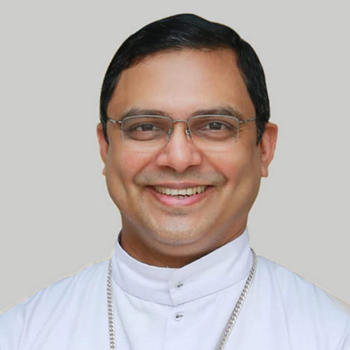

Guided by Faith. Strengthened by Community.
About Us
The Metropolitan Curia

Archbishop Joseph Perumthottam (Secretary)
The Metropolitan Archbishop - 94475 07393

Bishop Thomas Tharayil (Secretary)
Proto syncellus - 80780 88468

Very Rev. Joseph Vaniapurackal
Syncelli - 0481 2420040, 94952 68877

Very Rev. Dr. Thomas Padiyath
Syncelli - 0481 2421162, 94462 01820

Very Rev. Dr. Isaac Alencherry (Office)
Chancellor - 0481 2427372, 90374 40040

Very Rev. Fr. Cherian Karikompil - (Office)
Finance Officer - 0481 2426922, 95394 20040
The Other Offices
Rev. Dr. George Puthumanamuzhiyil
Vice Chancellor - 94469 82889
Rev. Fr. Jacob Parackal
Vice Chancellor - 99610 72872
Rev. Fr. Isaac Kooliparambil
Secretary to the Metropolitan Archbishop - 94475 07393
Rev. Fr. Joseph Plathanam
Secretary to the Metropolitan Emeritus - 94474 07724
Rev. Fr. Joseph Plathanam
Secretary to the Auxiliary Bishop - 80780 88468
Rev. Fr. James Kudilil
Assistant Archivist - 94950 20933

Rev. Fr. George Veliyathu
House Procurator - 94005 08582
Rev. Fr. Matthew Malyeckal
Office Assistant to Curia - 99611 06799
Metropolitan Tribunal
| Office | 80782 75421 |
|---|---|
| Judicial Vicar | Very Rev. Dr. Mathew Changankary |
| Judges | Rev. Dr. Joseph Thoompunka |
| Rev. Dr. Tom Puthenkalam | |
| Rev. Dr. George Puthumanamoozhiyil | |
| Rev. Sr. Ancy Poovathanikunnel SABS | |
| Rev. Sr. Maria Tresa FCC | |
| Promoter of Justice | Rev. Fr. Jacob Parackal |
| Defenders of Bond | Rev. Dr. Philip Nelpuraparambil |
| Rev. Fr. Jacob Parackal | |
| Auditors and Assessors | Rev. Fr. Gregory Naduviledam |
| Rev. Dr. Sibychen Puthiyidom OFM Cap. | |
| Notaries | Rev. Fr. Joseph Kalathil |
| Rev. Fr. Varkey Manavath | |
| Rev. Sr. Bincy Mangalassery SH | |
| Stable Advocate | Very Rev. Dr. Isaac Alencherry |
| Censors of Books | Very Rev. Dr. Thomas Padiyath |
| Very Rev. Dr. Scaria Kanniyakonil | |
| Rev. Dr. Joseph Nalpathilchira | |
| Rev. Dr. Dominic Muriyankavunkal | |
| Administrative Tribunal | Rev. Dr. Joseph Thoompunkal (President) |
| Rev. Dr. Tom Puthenkalam | |
| Rev. Fr. Abraham Vettuvayalil | |
| Rev. Fr. Abraham Changankary | |
| Rev. Fr. Adv. Joseph Kochuchirayil | |
| Rev. Fr. Joseph Mulavana | |
| Adv. Joji Chirayil | |
| Prof. Dr. PC Aniyankunju |
Archeparchial Consultors
| Bishop Thomas Tharayil | |
| Very Rev. Fr. Joseph Vaniapurackal | |
| Very Rev. Dr. Thomas Padiyath | |
| Very Rev. Dr. Mathew Changankary | |
| Very Rev. Dr. Isaac Alencherry | |
| Very Rev. Fr. Cherian Karikompil | |
| Rev. Fr. Jacob Varikkatt | |
| Rev. Fr. Thomas Mangalath |
Proto-Presbyters
| Very Rev. Dr. Jose Kochuparampil | Changanacherry |
| Very Rev. Fr. Philip Thayil | Alappuzha - Pazhavangadi |
| Very Rev. Fr. Jacob Cheeramvelil | Amboori |
| Very Rev. Dr. Joseph Mundakathil | Athirampuzha |
| Very Rev. Fr. Gregory Onamkulam | Champakulam - Kalloorkad |
| Very Rev. Fr. Mathew Chooravady (Sr) | Edathua |
| Very Rev. Fr. Abraham Karippingapuram | Kollam - Ayoor |
| Very Rev. Dr. Philip Nelpuraparampil | Kottayam |
| Very Rev. Dr. Mani Puthiyidam | Kudamaloor |
| Very Rev. Fr. George Nuzhaithadom | Kurumpanadom |
| Very Rev. Fr. George Kochuparampil | Manimala |
| Very Rev. Fr. Jacob Anchupankil | Nedumkunnam |
| Very Rev. Fr. Mathew Puthenangady | Pulincunnoo |
| Very Rev. Fr. Joseph Kaithaparampil (Sr) | Thiruvananthapuram |
| Very Rev. Fr. Francis Karuvelil | Thrickodithanam |
| Very Rev. Fr. Jose Varikkappally | Thuruthy |
Finance Council
| Mar Thomas Tharayil | |
| Very Rev. Fr Joseph Vaniapurackal | |
| Very Rev. Dr. Thomas Padiyath | |
| Very Rev. Fr. Cherian Karikompil (Ex officio) | |
| Very Rev. Dr. Isaac Alencherry | |
| Rev. Fr. Mathew Padinjarekutt | |
| Rev. Fr. John Manakunnel | |
| Prof. Dr. PC Aniyankunju | |
| Prof. Jacob Thomas Thayil | |
| Mr. Prem Kuttemperoor | |
| Mr. George Varanath | |
| Mr. Raju Kannattumadam | |
| Mrs. Tessy Sebastian Panamparampil |
Presbyteral Council
I. Ex. Officio Members
| Mar Thomas Tharayil | (Proto Syncellus) |
| Very Rev. Fr. Joseph Vaniapurackal | (Syncellus) |
| Very Rev. Dr. Thomas Padiyath | (Syncellus) |
| Very Rev. Dr. Mathew Changankary | (Judicial Vicar) |
| Very Rev. Dr. Isaac Alencherry | (Chancellor) |
| Very Rev. Fr. Cherian Karikompil | (Procurator) |
| Very Rev. Dr. Jose Kochuparampil | (Pastor, Metropolitan Church) |
| Very Rev. Dr. Varghese Thanamavunkal | (Rector, Minor Seminary) |
| Very Rev. Dr. James Palackal | (Mission Superior, Etawah/Jaipur Mission) |
| Rev. Dr. Thomas Aryankala | (Secretary, PPFA) |
II. Elected Members
| Rev. Fr. Abraham Changankary | |
| Rev. Fr. John Chavara | |
| Rev. Dr. Jacob Chethipuzha | |
| Rev. Fr. Joseph Elamthuruthiyil | |
| Rev. Fr. Joseph Elanjimattom | |
| Rev. Fr. Antony Ethackad | |
| Rev. Fr. Joseph Ettolil | |
| Rev. Fr. Antony Kachamkode | |
| Rev. Dr. Thomas Kainikkara | |
| Rev. Fr. Antony Kakkaparambil | |
| Rev. Fr. Joseph Kalarickal | |
| Rev. Dr. Thomas Karukakalam | |
| Rev. Fr. Jacob Karukayil | |
| Rev. Fr. Joseph Kattappuram | |
| Rev. Dr. Jacob Koippally | |
| Rev. Fr. Varghese Kossackal | |
| Rev. Fr. Thomas Kulathumkal | |
| Rev. Fr. James Kunnil | |
| Rev. Fr. John Manakunnel | |
| Rev. Dr. Isaac Mundunadackal | |
| Rev. Fr. Mathew Nadackal | |
| Rev. Fr. Gregory Naduviledam | |
| Rev. Fr. Joseph Nedumparampil | |
| Rev. Dr. Philip Nelpuraparampil | |
| Rev. Dr. Emmanuel Neriamparampil | |
| Rev. Dr. Joseph Nilavanthara | |
| Rev. Fr. George Panakezham | |
| Rev. Fr. Joseph Panakkezham | |
| Rev. Dr. Thomas Parathara | |
| Rev. Fr. Abraham Perumbalathussery | |
| Rev. Fr. Antony Porookara | |
| Rev. Fr. Sebastian Punnassery | |
| Rev. Fr. Chacko Puthiaparampil | |
| Very Rev. Dr. Mani Puthiyidam | |
| Rev. Dr. John V Thadathil | |
| Very Rev. Fr. Philip Thayil | |
| Rev. Fr. George Thycheril | |
| Rev. Fr. Philip Vaikathukaranveettil | |
| Rev. Fr. George Vallayil |
III. Nominated Members
| Very Rev. Fr. Joseph Kaithaparampil (Sr.) | |
| Very Rev. Dr. Scaria Kaniyakonil | |
| Very Rev. Fr. Abraham Karippingapuram | |
| Rev. Fr. Thomas Mangalathu | |
| Very Rev. Dr. Joseph Mundakathil | |
| Rev. Fr. Jacob Varikatt | |
| Rev. Fr. Varghese Arackal | |
| Rev. Fr. George Koottummel | |
| Rev. Fr. Zacharias Kunnakkattuthara | |
| Rev. Dr. Tom Puthenkalam | |
| Rev. Fr. Joseph Puthuveettilkalam (Teji) | |
| Rev. Dr. Mathew Thekkedathu | |
| Rev. Fr. Jacob Vattackattu |
Pastoral Council
I. Ex. Officio Members
| President (Archbishop) | Mar Joseph Perumthottam |
| Metropolitan Emeritus | Mar Joseph Powathil |
| Vice President (Proto Syncellus) | Mar Thomas Tharayil |
| Syncelli | Very Rev. Fr. Joseph Vaniapurackal |
| Very Rev. Dr. Thomas Padiyath | |
| Secretary | Dr. Dominic Joseph Vazheeparampil |
| Joint Secretaries | Dr. Rekha Mathews Koottummel |
| Sri. Antony Thomas Malayil | |
| Judicial Vicar | Very Rev. Dr. Mathew Changankary |
| Chancellor | Very Rev. Dr. Isaac Alencherry |
| Procurator | Very Rev. Fr. Cherian Karikompil |
| Secretary (XV Pastoral Council) | Dr. Antony Mathews |
| Corporate Manager | Rev. Fr. Joseph Karukayil (Manoj) |
| Director, Higher Education | Prof. Dr. PC Aniyankunju |
II. Elected Members
| Forane Council Secretary | Mr. Abin Alexander |
| Women Representative | Mrs. Ancy Mathew |
| Representative of the Consecrated | Rev. Sr. Liz Mary FCC |
| General | Mr. Varghese Antony |
| Mrs. Beena Sebastian |
III. Committee Convenors
| Liturgy & Catechism | Mr. Roy Kappankal |
| Ecumenism, Dialogue & Evangelization | Mr. Josukutty Kuttamperoor |
| Bible Apostolate & Kudumbakkoottayma | Mr. Sibi Mukkadan |
| Youth Welfare | Mr. Shijo Mathew |
| Family Welfare | Mr. Laly Elapunkal |
| Social Welfare & Women Empowerment | Adv. Job Michael MLA |
| Education | Mr. VJ Lali |
| Social Communication, Jagrathavedi | Mr. Jose Mathew Anithottam |
| Migrants & Tourism | Mr. Thankachan Ponmankal |
| Labour, Dalit & Nadar Welfare | Mr. James Elavumkal |
IV. Nominated Members
| General | Adv. Joji Chirayil |
| Adv. Sunny George Chathukulam |
V. Agenda Committee
| Mar Thomas Tharayil | |
| Dr. Dominic Joseph | |
| Dr. Rekha Mathews | |
| Prof. Dr. PC Aniyankunju | |
| Smt. Beena Sebastian |
VI. Liturgy & Catechetism Committee
| Rev. Dr. Andrews Panamparampil (Chairman) | |
| Rev. Fr. Kurian Puthenpura | |
| Very Rev. Dr. Varghese Thanamavunkal | |
| Rev. Dr. Joseph Kollara | |
| Rev. Dr. Joseph Puthenparambil (Shijo) | |
| Very Rev. Fr. Jacob Anchupankil | |
| Very Rev. Dr. Jose Kochuparampil | |
| Rev. Dr. Jacob Kizhakkeveettil | |
| Rev. Fr. Joseph Kayamkulathussery | |
| Sri. KO Joseph Parakkottil | |
| Sri. Aju Rajan | |
| Sri. Arun Jose | |
| Rev. Sr. Alphonsa Thottungal SH | |
| Rev. Sr. Leena Arackal AO | |
| Sri. Antony Thomas | |
| Dr. Bindu Thattaradiyil | |
| Sri. Josymon Augusty Asamparampil | |
| Sri. Babichan Mukale |
VII. Ecumenism & Dialogue Committee
| Rev. Dr. Cherian Karukaparambil (Chairman) | |
| Rev. Dr. Joseph Manakalam | |
| Rev. Dr. Thomas Karukakalam | |
| Rev. Fr. John Pathalil | |
| Very Rev. Fr. Philip Thayil | |
| Very Rev. Dr. Mani Puthiyidam | |
| Rev. Fr. Joseph Viruppel | |
| Rev. Dr. Mathew Thekkedathu | |
| Sri. Bobby Thomas | |
| Sri. Siby Srankal | |
| Smt. Shiny Baby | |
| Smt. Mollykutty Abraham | |
| Sri. Georgekutty TK | |
| Rev. Sr. Dr. Prasanna Vazheeparampil CMC | |
| Sri. Shaji Mathew Vazheeparambil | |
| Sri. Thomas Philip | |
| Sri. Varghese Antony | |
| Smt. Ambily Mathew | |
| Smt. Lissy Jose Powakara | |
| Sri. Josekutty Kuttemperoor |
VIII. Bible Apostolate & KudumbaKkoottayma Committee
| Rev. Fr. Thomas Kayamkulathussery (Jenny - Chairman) | |
| Rev. Fr. Jacob Varikkat | |
| Rev. Fr. Joseph Choolaparmbil | |
| Rev. Fr. Mathew Odalany | |
| Very Rev. Fr. George Nuzhaithadom | |
| Very Rev. Fr. George Kochuparampil | |
| Very Rev. Fr. Dominic Mundattu MCBS | |
| Dr. Antony Mathews Kandankary | |
| Adv. Sunny Chathukulam | |
| Sri. Sebastian K Joseph | |
| Rev. Sr. Sunitha Vazhayil MLF | |
| Rev. Dr. Sr. Mercy Nedumpuram SABS | |
| Rev. Sr. Maria Paravarakkath MMS | |
| Sri. PJ Joseph | |
| Sri. Siby Mukkadan | |
| Dr. Roy Joseph | |
| Smt. Rosamma Shaji | |
| Sri. Devasia Thomas | |
| Sri. Jomy James Perumpadappil | |
| Sri. Jacob Mathew Muttamthundiy |
IX. Youth Welfare Committee
| Rev. Fr. Antony Anakkallunkal (Chairman) | |
| Very Rev. Fr. Joseph Puthenpurayil OFM Cap | |
| Rev. Fr. Sebastian Elanjical CMI | |
| Rev. Fr. Joseph Velangattusserry | |
| Rev. Fr. Cherian Kakkuzhy | |
| Ms. Anitta Joseph | |
| Sri. Shijo Mathew | |
| Smt. Susan Thomas | |
| Sri. Jacob John Nedumanny | |
| Sri. Antony M John | |
| Jinu Ananthakkattu | |
| Rev. Sr. Jaseena SD | |
| Ms. Abitha Paulson | |
| Ms. Mini James Pulincunnoo | |
| Sri. Tom Thomas Thrickodithanam | |
| Sri. Antony Ouseph (CSM) | |
| Ms. Angel Sebastian Munduvelil | |
| Sri. Jaison Sebastian Thoompunkal | |
| Ms. Seenamol Cherian |
X. Family Welfare Committee
| Rev. Fr. Sebastian Chamakala (Chairman) | |
| Very Rev. Dr. Scaria Kanniyakonil | |
| Rev. Fr. Abraham Kadathukalam | |
| Rev. Fr. Thomas Thaikkattussery | |
| Rev. Dr. Thomas Kochuthara | |
| Very Rev. Fr. Sebastian Chamathara CMI | |
| Very Rev. Fr. Jilson Mathew Kakkattupillil VC | |
| Rev. Sr. Rose Chackala FDSHJ | |
| Smt. Thresiamma James | |
| Sri. Shinson K Varghese | |
| Sri. Suresh C | |
| Sri. Thomaskutty MT Manakkunnel | |
| Smt. Selinamma Sam | |
| Smt. Ancy Mathew Chennoth | |
| Sri. KC Varghese | |
| Sri. Rajeev George | |
| Sri. Shaji Lonappan Kanjooparampil | |
| Smt. Beena Sebastian | |
| Sri. Laly Joseph Elappumkal | |
| Sri. Mathew CV |
XI. Social Welfare Committee
| Rev. Fr. Thomas Kulathunkal (Chairman) | |
| Very Rev. Fr. Gregory Onamkulam | |
| Rev. Fr. Thomas Mangalath | |
| Rev. Fr. Thomas Maliekal | |
| Rev. Fr. Joseph Kochuchirayil | |
| Rev. Fr. Sebastian Elanjickal CMI | |
| Rev. Fr. Joseph Pulickal SJ | |
| Rev. Sr. Mary Lincy LSDP | |
| Rev. Bro. James Kanyarakathu CST | |
| Dr. KC Joseph Ex MLA | |
| Smt. Mariamma Joseph | |
| Sri. Anil Thomas | |
| Mrs. Patsy Stephen | |
| Smt. Sally George | |
| Sri. Baiju C Xavier | |
| Smt. Saramma George | |
| Sri. Joppan Joy Champakulam | |
| Ms. Reena Sajan | |
| Adv. Prince Lukose | |
| Adv. Job Michael MLA |
XII. Education Committee
| Rev. Fr. Joseph Karukayil (Manoj - Chairman) | |
| Dr. Sabu Thomas Chathukulam | |
| Prof. Dr. PC Aniyankunju | |
| Dr. Jacob Mathew Mundakathil | |
| Sri. VJ Laly | |
| Dr. Rooble Raj | |
| Sri. Jansen Joseph | |
| Sri. Thomas J Manthara | |
| Sri. Alexander K Varghese | |
| Sri. Joseph Antony Pallath | |
| Sri. Binu John | |
| Sri. Jemin J Varappally | |
| Dr. Mareena Aloysius | |
| Sri. Jose Joseph Anithottathil | |
| Sri. Abin Alexander Ayirapparayil | |
| Sri. PJ Sebastian | |
| Rev. Sr. Dr. Cherukusumam CMC | |
| Sri. Shyraj Varghese |
XIII. Social Media - Communications - Jagrathavedi
| Rev. Fr. James Kokkavayalil (Chairman) | |
| Rev. Fr. Bobby Alex Mannamplackal | |
| Rev. Fr. Antony Ethackad | |
| Rev. Dr. Jose Nilavanthara | |
| Sri. Jose Mathew Anithottathil | |
| Sri. John Paul Amboori | |
| Sri. Aswin George | |
| Adv. Lithin Thomas | |
| Sri. Bennichan CT Chirayil | |
| Sri. Joby PC | |
| Sri. Aneesh Thomas | |
| Adv. Joji Chirayil | |
| Rev. Sr. Mercy ASMI | |
| Rev. Sr. Jyothis Maria LSC | |
| Sri. Job Antony | |
| Sri. Roy Kottarachira | |
| Sri. Sergy Antony | |
| Sri. Shijo Jacob | |
| Sri. J Kuriakose |
XIV. Labour - Dalit - Nadar Welfare
| Rev. Fr. John Vadakkekalam (Chairman) | |
| Very Rev. Fr. Mathew Chooravady | |
| Very Rev. Fr. Abraham Karippingapuram | |
| Rev. Fr. Joseph Chalackal | |
| Sri. James Elavumkal | |
| Sri. Siby Joseph Moolamkunnam | |
| Rev. Sr. Jyothis Mankudiyil JS | |
| Rev. Sr. Amala Jose SH | |
| Mr. Nithin Antony | |
| Smt. Ansamma Devasia | |
| Sri. Shyju Joseph | |
| Sri. Sijo Jacob Nedumanny | |
| Adv. AV George | |
| Adv. KC George | |
| Sri. Lenin Joseph | |
| Sri. Jose K Dharman | |
| Smt. Jolly Zachariah | |
| Rev. Sr. Carmelatha SD | |
| Smt. Jessy John | |
| Smt. Sophiyamma John |
XV. Migrant Care - Tourism Apostolate
| Rev. Fr. Joseph Puthuveettilkalam (Teji - Chairman) | |
| Very Rev. Dr. Joseph Mundakathil/td> | |
| Very Rev. Dr. Varghese Thanamavunkal | |
| Very Rev. Fr. Francis Karuvelil | |
| Rev. Dr. Tom Puthuparampil | |
| Very Rev. Dr. James Palackal | |
| Sri. James Areekuzhy | |
| Sri. Tomichan Antony Meppuram | |
| Sri. Sunny Thomas Pulinkalayil | |
| Sri. Thankachan Ponmankal | |
| Smt. Salimma Joseph | |
| Rev. Sr. Liz Mary FCC | |
| Prof. Joseph Titto | |
| Prof. Sebastian Varghese | |
| Adv. PP Joseph | |
| Sri. Soby Joseph | |
| Sri. Babu Punnamchira | |
| Sri. Jose Mathew Polackal |
XVI. Forane Council Secretaries
| Place | Name |
|---|---|
| Changanacherry | Shijo Jacob 9. Kudamaloor Adv. Lithin Thomas |
| Alappuzha | Roy Kottarachira 10. Kurumpanadom Soby Joseph |
| Amboori | John Paul Y 11. Manimala Jose Mathew |
| Athirampuzha | Boby Thomas 12. Nedumkunnam Jacob John |
| Champakulam | Jopan Joy 13. Pulincunnoo Abin Alexander |
| Edathua | Josymon Augsty 14. Thiruvananthapuram Justin Joseph |
| Kollam | Jose Mathew Anithottam 15. Thrickodithanam Sibi Mukadan |
| Kottayam | Sebastian K Joseph 16. Thuruthy Sebastian PJ |